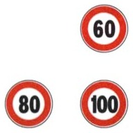

The map for this topic
Three subjects share this topic, and one idea rules them all: the posted limit is a ceiling, not a target. The topic goes first through the general rule (what actually sets your speed), then the numbers (the standard limits and their exceptions), then the duty never to be a hazard or an obstruction (when to slow, what never to do), and finally the special case of railroad crossings (passaggio a livello).
Be warned: many candidates find this the hardest topic to memorize, because the limit changes with road type, weather, vehicle, and driver seniority. Do not brute-force the numbers. Learn the table of limits and the short exceptions list below, and let the question explanations, each of which ends with a one-line recap of the whole table, refresh them for you until they stick.
The general rule of speed
- You must always keep the vehicle under control, at a speed that lets you react safely to the unexpected.
- You must always be able to stop within the distance you can see to be clear, in safety.
- Speed is set by the conditions, never by the posted limit alone. It is wrong to think only the maximum limit matters, and nothing ever requires a constant speed.
- The conditions are a closed list: the vehicle's characteristics, condition and load, the characteristics and condition of the road, the traffic, and the weather.
- Your own physical and mental state counts too, alongside the others and never on its own: tiredness, stress, or poor health demand a lower speed.
- Speed must also stay within the posted maximum and every signed limit. The limits bind every driver, and a high-performance vehicle is not exempt from them.
- Anything outside that list is no reason to choose a speed, however sensible it sounds: your own driving ability, the brand of your tires, how far you still have to travel, how much time you have, your fuel type, your transmission, or the speed of the vehicles behind you.
- Driving fast is never a duty. No rule asks you to clear the roadway as quickly as possible or to hold a high speed so as not to be in the way.
- Speed must never create danger for people or property, nor disorder or obstruction for traffic.
The numbers
The US bridge: match the road types before the numbers
American instincts about speed numbers mislead until you match the road types. The main extra-urban road (strada extraurbana principale) is the closest thing to a US Interstate: by definition a divided highway, and its 110 km/h is 68 mph, right where American freeway limits sit. The autostrada has no American equivalent: its 130 km/h is 81 mph, and 150 where signed is 93 mph, faster than anything legal in the US. A secondary extra-urban road is your two-lane rural road (90 ≈ 56 mph, close to the familiar 55). And town is 50 (31 mph), if anything a touch higher than a US 25-30 zone. In short, the principale is your Interstate, the autostrada is a class above anything you have driven, and the secondaria is a rural two-lane road.
How to remember the numbers
- The limits form a series of odd tens, 20 km/h apart, from 150 down through 130, 110, 90 and 70 to 50. Divide any of them by 10 and the result is an odd number.
- The four standard limits are 130, 110, 90 and 50 (autostrada, principale, secondaria, town). Seventy is in the series but is not among them, since no road type carries it as a standard limit.
- A sign can raise a limit one step. The autostrada goes up to 150 and a suitable urban road to 70, but only where signed.
- Rain, any precipitation, lowers a limit one step on the two fastest roads, from 130 to 110 on the autostrada and from 110 to 90 on the principale. The secondaria stays at 90 and town at 50.
- In dense fog the autostrada and the principale can be held to the lowest figure of the series, 50.
- Towing a trailer or caravan means 70 on every extra-urban road, main or secondary. It is a figure of the series, but the same figure for both roads.
- Only a few figures fall outside the series, and they are the ones to memorize. A driver licensed less than 3 years is held to 100 on the autostrada. On the principale the same driver's 90 is one step down, as the series predicts.
- 80 is the figure for slow vehicles on the fastest roads. It is the limit when towing on the autostrada, and the limit for a non-light quadricycle outside built-up areas.
- The limits under 50 belong to vehicles, not to roads. Mopeds and light quadricycles are held to 45 on every road, and farm and work machines to 40 on tires and 15 on tracks.
- And remember: these are Italy's numbers. Every European country sets its own, so autostrada and extra-urban limits differ across Europe. That is why the ITALIA board at the border lists them for drivers entering the country.
The standard speed limits (car or vehicle up to 3.5 t)
- In a built-up area the limit is 50 km/h (31 mph). It rises to 70 only where specially signed on a suitable urban road, so 50 is the ordinary figure, not an always figure, and 70 is never the default.
- On a secondary extra-urban road (strada extraurbana secondaria) the limit is 90 km/h (56 mph).
- On a main extra-urban road (strada extraurbana principale) the limit is 110 km/h (68 mph). It never rises to 130, whatever the road's build, and never on a descent.
- On the autostrada the limit is 130 km/h (81 mph).
- 150 applies only on autostrada sections with special characteristics where signed: three-lane stretches with an emergency lane and average-speed enforcement, and only when traffic, weather and the accident record allow it. It never applies on "any autostrada", never as a day-time figure, and never because the road has four lanes.
- The same four figures cover every motor vehicle up to 3.5 t: cars, motorcycles, trucks and motorhomes up to 3.5 t all share 130, 110, 90 and 50.
- Rain lowers the two highest limits: 130 becomes 110 on the autostrada and 110 becomes 90 on the main extra-urban road. The reduction applies to any precipitation, hail included.
- In thick fog with visibility under 100 m (110 yd), temporary limits as low as 50 km/h (31 mph) may be imposed on autostrade and main extra-urban roads.
- There is no night-time bonus: 130 is the autostrada ceiling day and night, high beams or not.
- The overtaking lane has the same limit as the rest of the roadway.
Towing changes the limits, but the little trailer doesn't
- When towing a trailer or caravan (rimorchio, caravan, meaning a horse trailer, boat trailer, motorcycle trailer, camper), the limits are 80 km/h (50 mph) on the autostrada and 70 km/h (43 mph) on extra-urban roads, main or secondary. The trailer's mass does not change these figures, and a light trailer (rimorchio leggero) is still a trailer.
- A small utility trailer (carrello appendice) counts as part of the car, so the normal car limits apply (130/110/90/50), in rain the normal rain figures. Statements that give it 80 or 100 are false.
- Truck-and-trailer combinations (autotreni) are capped at 70 km/h on extra-urban roads, main and secondary, and at 80 on the autostrada.
Other vehicles and the new-driver limits
- Mopeds are capped at 45 km/h (28 mph) everywhere, and the same 45 applies to light quadricycles, which the Code treats as mopeds.
- Non-light quadricycles (quadricicli non leggeri) are capped at 80 km/h (50 mph) outside built-up areas. The Code's speed rule says simply quadricicli for these, because a light quadricycle is built to go no faster than 45 km/h and counts as a moped.
- Agricultural machines (macchine agricole) on pneumatic tires and wheeled work machines (macchine operatrici) are capped at 40 km/h (25 mph), and on tracks they are held to 15. A flashing yellow light does not raise this.
- Heavy buses (over 8 t) have their own caps, 80 outside town and 100 on the autostrada, which is why some buses carry the speed discs described below.
- For the first 3 years after licensing, a driver is capped at 100 km/h (62 mph) on autostrade and 90 km/h (56 mph) on main extra-urban roads. The other limits are unchanged.

- These speed-marker discs are fitted to the rear of vehicles bound by lower limits than the general ones: some buses, and heavy categories such as trucks over 3.5 t. They show the maximum speeds allowed for that vehicle.
- They are not fitted to trucks or motorhomes up to 3.5 t, nor to motorcycles of any displacement.
- There is no sticker for new drivers: the novice caps travel with the license, not on the car.
Never be a hazard: adjusting to conditions
When you must slow down (and when you needn't)
Slow down, and stop if necessary, wherever the road or the situation asks for it. The Code lists the cases.
- Slow down in curves, on humps, and on any stretch of limited visibility.
- Slow down at intersections, and stop if necessary, to let through the vehicles that have priority.
- Slow down near schools and places frequented by children.
- Slow down on steep descents.
- Slow down in narrow or congested passages and at bottlenecks.
- Slow down at night.
- Slow down in built-up areas (centro abitato) and on stretches lined with buildings.
- Slow down in fog or haze, on snow or ice, and wherever the surface is slippery with water, leaves or mud.
- Slow down where the surface is broken by potholes, uneven patches, or wet leaves. The road's state of maintenance and cleanliness sets your speed too.
- Slow down in a strong side wind.
- Slow down when meeting an oncoming vehicle is difficult or awkward.
- Slow down near pedestrian crossings, when pedestrians on your path are slow to move aside or uncertain, and where, for lack of a sidewalk, they occupy the roadway.
- Slow down when animals on the road show fear.
- Slow down when you are blinded by glare, the sun included.
- Slow down in mixed traffic, where slow and fast vehicles share the road, or animals and pedestrians are on it.
- Slow down at roadwork, and on meeting the warning triangle of a stopped vehicle.
You are not required to slow merely because a road is one-way, outside a built-up area, a provincial road, or near a speed camera. Those are common false statements.
Where traffic moves in parallel lines or in channelized lanes, it is normal, and legal, for the right lane to move faster than the left.
- A ball rolling into the road in town means a child may follow: slow at once and be ready to stop.
- Slow gradually rather than braking hard, so the vehicle behind is not caught out, and do not swerve abruptly or cross into the opposite lane.
- Passing close to parked cars with people still aboard is dangerous even at low speed, and even before any door is open: a door may open carelessly at any moment.
- Parked cars can also hide a wheelchair user or a stroller about to cross.
- Even with the right of way, you must slow at intersections. Having priority never removes the duty to slow.
- If you cross an intersection at high speed and crash, you can be found partly at fault (concorso di colpa). Having priority never makes you "completely free of liability", and the fault is never simply the other driver's.
- Near and at extra-urban intersections the general limits stay unchanged, and an interchange on separate levels does not suspend them. How much you slow there is set by the priority rules and the visibility, not by a fixed figure.
Speed, the curve, and the environment
- Speed in a curve affects the vehicle's road-holding. Too much speed there can make it skid or overturn.
- Do not take curves with the clutch pedal pressed down.
- Driving fast and making abrupt speed changes raises fuel consumption and pollution. A smooth, moderate speed is both safer and cleaner.
Never coast downhill in neutral with the engine off
- It does not save you anything worth having, fuel included, and it costs you control in several ways at once.
- With the engine off, the power steering stiffens, and a quick swerve to avoid an obstacle becomes hard.
- With the engine off, the vacuum brake servo loses its assist, so braking force drops, the braking distance grows dangerously, stopping gets harder and harder, and crash risk rises.
- Never remove the ignition key while moving: it can lock the steering.
- Coasting with the engine off does not overload the electrical system and does not damage the differential; those are the false variants. The harm is to steering and braking.
Behavior at railroad crossings
- Approach slowly and with maximum caution, so as not to hit the barriers or damage the equipment. Never speed up to cross before the train, and never to be able to force the barriers.
- If your vehicle is stranded on the tracks, get all people out immediately and push or tow the vehicle clear of the tracks as fast as you can, with the help of other road users if needed.
- Warn approaching trains of the danger and notify the train station. Switching off the engine and letting the passengers out is not the whole of your duty. (For this, as for any road emergency in Italy, the number to dial is 112, the European equivalent of the US 911.)
- If the barriers begin to close while you are still on the tracks, stay calm and clear the crossing by any means, even breaking through the barriers.
- Do not abandon the vehicle, do not detach and leave a trailer on the tracks, and do not waste time unloading cargo or draining the fuel tank.
- Even if people are hurt in a collision at the crossing, the vehicles must still come off the tracks.
- Breaking the rules here is not a minor matter and is not dangerous only at night. It can endanger everyone aboard a passing train, as well as the driver.
Summary of key points
- The posted limit is a ceiling. You must always be able to stop within the distance you can see, adjusting to vehicle, road, traffic, and weather.
- Car limits are 50 built-up (70 if signed), 90 secondary extra-urban, 110 main extra-urban, and 130 autostrada. The two highest drop in rain or hail, to 110 and 90, 150 applies only where specially signed, and fog can bring temporary limits down to 50.
- When towing a trailer or caravan, the limit is 80 on the autostrada and 70 on extra-urban roads. A small utility trailer (carrello appendice) leaves the normal car limits unchanged; autotreni are capped at 70 on extra-urban roads.
- Mopeds are capped at 45, non-light quadricycles at 80 outside towns, and agricultural or work machines at 40.
- For the first 3 years, the cap is 100 on autostrade and 90 on main extra-urban roads.
- Even with the right of way, slow at intersections. A high-speed crash can leave you partly at fault.
- Never coast downhill in neutral with the engine off: steering and brakes lose their assist. Never pull the ignition key while moving.
- At a railroad crossing, approach slowly. If stuck, get people out, clear the vehicle, and warn the train. Break through the barriers if trapped rather than abandon the vehicle.